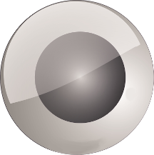

Mission
The Journey of Triomya Starts with Intelligence, roots in freedom and ends at automated life support for humans.
Etymology of Triomya
The word Triomya simply means an organization capable of delivering innovation,modification and simplification of systems through software coded intelligence allied with automation and Life-systems.
|
Intelligence |
Automation |
Life Systems | ||
|  | ||||
|
Intelligence is the creative division of Triomya. The design and development activities of intelligent applications for software packages, automation systems and life systems are carried out through this division.
This is the root channel for the business of Triomya. This channel presents Triomya to the world with all its support to achieve the mission of Triomya. The scope of this channel is intelligent coding and information processing. |
This is one of the two main branches of Triomya and this channel is an applied channel of intelligence which governs the automation of machinable activities in the world through the business of Triomya. The scope of the channel is engineering machines with intelligence inside. |
Life Systems is the special division of Triomya which enhances human life through the products,solutions and services of Intelligence and Automation divisions.
|